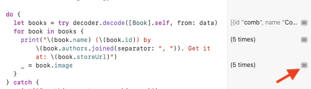
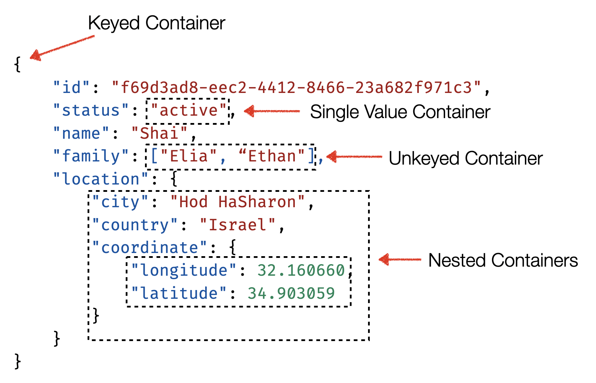
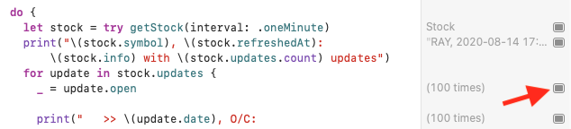

Chapter 8: Codable¶
When developing your app, you’ll often deal with a myriad of data models and various external pieces of data that you’ll want to represent as data models in your app.
To solve this problem, you’ll often use a technique called serialization, where you create an external representation of your data models in one of many consumable formats supported by multiple platforms. The most popular of the bunch by far is JSON (Javascript Object Notation).
The need for data serialization in Apple’s platforms is so common that they solved it all the way back in Xcode 3.0, with the introduction of NSCoding, which lets you describe how to encode and decode your data.
Unfortunately NSCoding, while an incredible abstraction at the time, suffers from many issues and a lack of modern touch that fits the Swift world — such as automatically synthesized encoding and decoding, support for value types and more. Enter Codable.
What is Codable?¶
Codable is a type alias combining two protocols: Encodable and Decodable. These let you define how objects are encoded and decoded to and from an external data representation, such as JSON.
The great thing about Codable is that it’s mostly agnostic toward the format it encodes to and decodes from. It uses an additional set of abstractions called Encoder and Decoder to achieve this separation.
These abstractions own the specific intimate knowledge of how to encode and decode in and out of their specific data formats. For example, a JSONEncoder would know how to encode a given data model into a JSON response, while a PropertyListDecoder would know exactly how to take a plist file and decode it into a given data model.
This abstraction means that your objects only have to conform to Codable or either of its parts once, and can be encoded to and decoded from many different formats using various encoders and decoders.

What you’ll learn, and what you won’t¶
Because this is an advanced book, you’ll quickly browse through the basic Codable knowledge, mostly focusing on the advanced materials down the dark corners of Codable.
Since JSON represents the vast majority of Codable use cases, you’ll focus on using JSONEncoder and JSONDecoder, with the majority of this chapter focusing on the Decodable portion of the equation.
Specifically, you’ll work on three real-life API responses and write the appropriate Decodable and Encodable conformances for them, teaching you everything you need to tackle the weirdest of responses.
Brushing up on the basics¶
When decoding or encoding a data structure, you often get to use Codable with literally no boilerplate.
Given the following JSON:
{
"name": "Shai Mishali",
"twitter": "@freak4pc",
"github": "https://github.com/freak4pc",
"birthday": "October 4th, 1987"
}
And the following Person struct:
struct Person {
let name: String
let twitter: String
let github: URL
let birthday: Date
}
All you’d have to do to make Person compatible with its JSON structure is simply conform it to Codable, like so:
struct Person: Codable {
...
}
And use the appropriate encoder or decoder:
// Decode
let decoder = JSONDecoder()
let person = try decoder.decode(Person.self, from: jsonData)
// Encode
let encoder = JSONEncoder()
let jsonData = try encoder.encode(person)
Swift will know to match the keys in your JSON to the ones in your Person struct, and will even know how to automatically convert the String date and URL to Swift’s Date and URL!
You’ll learn more about how Swift knows to do this automatically for you later in this chapter.
With this quick refresher behind you, it’s time to work on some APIs!
API #1: Ray’s Books¶
Getting started¶
Open the starter playground found in projects/starter and look at the Navigation pane on the left:

You’ll notice a few things:
- The playground comprises several pages, each representing a different API.
- The Sources folder includes an API helper you’ll use throughout this chapter.
- The Resources folder includes JSON files containing the responses you’ll interact with in this chapter.
Open books.json and note the response’s JSON structure:
[
{
"id": "comb",
"name": "Combine: Asynchronous Programming with Swift",
"store_link": "https://store.raywenderlich.com/...",
"authors": [
"Scott Gardner",
"Shai Mishali",
"Forent Pillet",
"Marin Todorov"
],
"image_blob": "..."
}
]
This file provides an array of books from the raywenderlich.com book catalog.
Basic decoding¶
Open the page 1. Ray’s Books. The easiest path to decoding the response is to start with properties you get “for free” from Swift.
Add the following code to your playground:
struct Book: Decodable {
let id: String
let name: String
let authors: [String]
}
Above your new struct, add the following piece of code to try it out:
let data = API.getData(for: .rwBooks)
let decoder = JSONDecoder()
do {
let books = try decoder.decode([Book].self, from: data)
print("—— Example of: Books ——")
print(books)
} catch {
print("Something went wrong: \(error)")
}
Run your playground and you’ll see a response similar to the following:
—— Example of: Books ——
__lldb_expr_1.Book(id: "comb", name: "Combine: Asynchronous Programming with Swift", authors: ["Scott Gardner", "Shai Mishali", "Forent Pillet", "Marin Todorov"]), ...])]
Nice! You’ve got the basics down. You’ll now learn how to decode the other fields, starting with store_link.
Key decoding strategies¶
Add the following property to Book:
let storeLink: URL
Run your playground. You’ll see the following error:
—— Example of: Books ——
keyNotFound(CodingKeys(stringValue: "storeLink", intValue: nil), ... debugDescription: "No value associated with key CodingKeys(stringValue: \"storeLink\", intValue: nil")
As the error outlines, no key called storeLink exists in the JSON response. However, there is one called store_link!
Codable’s automatically synthesized keys use a one-to-one mapping, so the decoder doesn’t know it should translate store_link, a snake-cased key, to storeLink, a camel-cased key.
Fortunately, JSONDecoder provides an extremely useful concept called a key-decoding strategy, which tells the decoder how it should translate the response keys into Swift’s camel-cased keys.
The snake-case option is so common that it’s already built into JSONDecoder.
Below the following line:
let decoder = JSONDecoder()
Add this code:
decoder.keyDecodingStrategy = .convertFromSnakeCase
This tells the JSON decoder to automatically convert snake-cased keys as needed.
Run your playground again, and you’ll be good to go:
—— Example of: Books ——
[__lldb_expr_5.Book(... storeLink: https://store.raywenderlich.com/products/combine-asynchronous-programming-with-swift), ...]
Data decoding strategies¶
Four keys decoded, and one final key to go — image_blob. This key contains a Base 64 representation of image data, so you can easily transport small thumbnails along with your JSON response.
Decoding data using Decodable is not as hard as it sounds. It uses a concept similar to a key decoding strategy — a data decoding strategy.
With a data decoding strategy, whenever JSONDecoder sees a property of type Data, it checks with the data decoding strategy to determine how it should translate the JSON data into Swift’s Data type.
Below the keyDecodingStrategy you added earlier, add the following line:
decoder.dataDecodingStrategy = .base64
Finally, add the following two properties to Book:
let imageBlob: Data
var image: UIImage? { UIImage(data: imageBlob) }
The code above defines Base 64 as the data decoding strategy (which is also the default), an imageBlob property to correlate with the image_blob key in your JSON response and, finally, wraps everything up with an image computed property you can use to see the image itself.
Inside the do block in the example, replace print(books) with:
for book in books {
print("\(book.name) (\(book.id))",
"by \(book.authors.joined(separator: ", ")).",
"Get it at: \(book.storeLink)")
_ = book.image
}
Run the playground and you’ll see output similar to the following:
—— Example of: Books ——
Combine: Asynchronous Programming with Swift (comb) by Scott Gardner, Shai Mishali, Forent Pillet, Marin Todorov. Get it at: https://store.raywenderlich.com/products/combine-asynchronous-programming-with-swift
...
In the gutter area, in the line that says _ = book.image, press the Show Result button:

Then, right-click the resulting image area and choose Value History:

Now you can scroll and see all the loaded Base 64 decoded images from your JSON response. Excellent!
You’re still not done with the Ray Books API. Before wrapping up, you’ll take a small detour to learn a bit more about Coding keys.
Understanding coding keys¶
A CodingKey is a simple protocol describing how a key of a specific property is represented. It has two properties: stringValue, for string keys such as the ones you’ve just seen, and an optional intValue, for cases when the key is part of an array:
public protocol CodingKey {
var stringValue: String { get }
var intValue: Int? { get }
init?(stringValue: String)
init?(intValue: Int)
}
It can be decoded with either a numeric key or a string key, but not both.
If you think back to the decoding error you saw earlier, a CodingKey with a stringValue of storeLink wasn’t found in the original response until you added the appropriate key decoding strategy.
When your properties match perfectly with those of the JSON response, you don’t have to manually create any coding keys. As soon as a single one of them requires a custom key, however, you’ll need to define your own coding keys.
A common way to do this is to use an enum with a raw value of String. There’s no need to copy this into your playground.
enum CodingKeys: String, CodingKey {
case id, name, authors
case storeLink = "store_link"
case imageBlob = "image_blob"
}
When you explicitly specify the coding keys as shown above, you don’t need a key decoding strategy.
Custom key decoding strategies¶
As mentioned earlier, there’s one final challenge for you to tackle in this section: creating your own decoding strategy.
Replace the following line:
let data = API.getData(for: .rwBooks)
With this one:
let data = API.getData(for: .rwBooksKebab)
This uses a kebab-case version of the Ray’s Books API, meaning that store_link is now store-link, and image_blob is now image-blob.
Run your playground and you’ll find a new error waiting for you:
[...] No value associated with key CodingKeys(stringValue: \"storeLink\", intValue: nil) (\"storeLink\"), converted to store_link."
As the error mentions, the decoder tries to convert storeLink to store_link but can’t find a key that matches it in the JSON response.
Unfortunately, there’s no built-in convertFromKebabCase decoding strategy, so you’ll just have to make your own!
One of the key decoding strategies you can use, the aptly named .custom, lets you take full control of the key decoding and conversion.
At the end of the playground, add the following code:
extension JSONDecoder.KeyDecodingStrategy {
static var convertFromKebabCase: JSONDecoder.KeyDecodingStrategy = .custom({ keys in
})
}
This new static property returns a custom key decoding strategy that takes in an array of CodingKeys and returns a single, transformed coding key. Don’t worry about the compilation errors for now.
Add the following lines inside your new custom strategy:
// 1
let codingKey = keys.last!
let key = codingKey.stringValue
// 2
guard key.contains("-") else { return codingKey }
// 3
let words = key.components(separatedBy: "-")
let camelCased = words[0] +
words[1...].map(\.capitalized).joined()
return ???
In this code, you:
- Get the last coding key in the array. The array of coding keys represents the entire path from the root of the JSON response to the specific key you’re working on, so you’re only interested in the last one, in this case.
- If the key doesn’t contain a dash, it’s definitely not kebab-case, so you return the coding key as-is.
- If it is kebab-case, you split the key by the dashes and capitalize every word but the first one.
camelCased now contains the kebab-case-turned-camel-case key you need. But what should you actually return at the end? A CodingKey!
Unfortunately, you can’t just instantiate one because it’s a protocol. But you can easily write your own concrete helper type to aid in this task. Add the following piece of code to your playground:
struct AnyCodingKey: CodingKey {
let stringValue: String
let intValue: Int?
init?(stringValue: String) {
self.stringValue = stringValue
self.intValue = nil
}
init?(intValue: Int) {
self.intValue = intValue
self.stringValue = "\(intValue)"
}
}
This AnyCodingKey type simply lets you instantiate a CodingKey with either an integer or a string. This exact implementation is actually part of Apple’s documentation, but unfortunately, it’s not currently part of the standard library.
With your new AnyCodingKey ready, you can finalize your custom key decoding implementation.
Replace return ??? with the following:
return AnyCodingKey(stringValue: camelCased)!
Finally, replace the following line:
decoder.keyDecodingStrategy = .convertFromSnakeCase
With this one:
decoder.keyDecodingStrategy = .convertFromKebabCase
This will tell JSONDecoder to use your new custom key decoding strategy.
Run your playground page for the final time and everything should work as it did before. Hooray!
Getting this API to parse beautifully and elegantly with Swift’s type system took a bit of work, but look how much you’ve learned so far. And you’re just getting started. Time for the next challenge!
API #2: Magic: The Gathering¶
Magic: The Gathering was the first modern trading card game and it remains wildly popular among fans of the genre. Various cards have different powers, rarity, types and much more, and span over 20 different card sets.
In this section, you’ll work on creating a custom Decoder to decode an actual response from https://magicthegathering.io/, an API consolidating data about these cards.
To get started, switch over to the playground page, 2. Magic the Gathering and look around. The playground already includes some boilerplate code to save time, which gets the API response and decodes it into a basic struct where all keys are automatically synthesized.
Run the playground and you’ll see that the basics are already up and running:
🃏 Archangel of Thune #8
🃏 Thoughtseize #110
🃏 Batterskull #130
🃏 Force of Will #28
🃏 Krenko, Mob Boss #15
🃏 Rishkar’s Expertise #123
Open magic.json in the Resources folder to get a glimpse of the somewhat complex data structure you’ll work on in this section. When you’re ready, move over to the next section.
Decoding the card’s mana¶
Each card has something called a Mana Cost — the cost needed to put the card into play. The first card in the JSON response has a manaCost of {3}{W}{W}, which means three of any color (colorless), and two white mana cards.
The response uses a string for this, but it could have a much nicer, typed representation in Swift.
To do this, you’ll add two new data types: Card.Mana, which will represent the mana cost, and include an array of Card.Mana.Color — an enum of the various mana color options.
Add the following piece of code to the end of the playground page:
extension Card {
/// Card's Mana
struct Mana: CustomStringConvertible {
// 1
let colors: [Color]
// 2
var description: String { colors.map(\.symbol).joined() }
}
}
extension Card.Mana {
/// Card's Mana Color
enum Color {
// 3
case colorless(Int)
case extra
case white
case blue
case black
case red
case green
// 4
var symbol: String {
switch self {
case .white: return "W"
case .blue: return "U"
case .black: return "B"
case .red: return "R"
case .green: return "G"
case .extra: return "X"
case .colorless(let number): return "\(number)"
}
}
}
}
Here’s the breakdown of the code above:
- You define a new
Card.Manatype, which has an array ofCard.Mana.Colormodels. Manaalso conforms toCustomStringConvertibleand prints out the color symbols of the mana cost, joined.- The
Colorenum contains cases for all individual mana colors, as well as.colorless, which has an associated value of the number of colorless mana. - Finally, the mana color has a
symbolcomputed property to print out the single-character symbol of the mana color.
So far, so good. But how do you actually make Mana conform to Decodable in a way that processes the source string 5{W}{W}? Codable obviously can’t know how to translate this information automatically.
This is where a custom Decodable conformance proves extremely useful.
First, you’ll add an initializer to Card.Mana.Color that accepts the mana symbol. You’ll use this in the Decodable conformance of Mana itself.
Add the following initializer to Card.Mana.Color enum:
init?(symbol: String) {
if let value = Int(symbol) {
self = .colorless(value)
return
}
switch symbol.lowercased() {
case "w":
self = .white
case "u":
self = .blue
case "b":
self = .black
case "r":
self = .red
case "g":
self = .green
case "x":
self = .extra
default:
print("UNKNOWN \(symbol)")
return nil
}
}
This initializer simply accepts the symbol, such as W or 3, and returns the appropriate enum case. If the value is numeric, it returns the .colorless case with the associated numeric value.
Before you move on to the next section, you’ll want to learn more about one of the foundations of how encoding and decoding are structured in Codable — containers.
Understanding containers¶
If you’ve ever written a custom Decodable or Encodable initializer, it’s quite likely you’ve worked with a decoding or encoding container, accordingly:

There are three unique types of containers:
- Keyed Container: The most common kind of container. In the example above, you decode a dictionary keyed by a set of
CodingKeys, hence the name. - Unkeyed Container: As its name suggests, you use this to decode structures that don’t have string-based coding keys — arrays, for example.
- Single Value Container: Use this when decoding a single value into some concrete type. In the example above, you could have a
Statusenumwith a custom decoder that uses a single value container to resolve the decoded value.
These containers can each be nested, meaning they can be sub-containers of a different container.
You can think of a container as a context for your decoding or encoding.
Looking at the example above, the top keyed container lets you work in the context of the keys id, status, name, family and location, while the inner-most coordinate nested container lets you decode in the context of the longitude and latitude keys.
You’ll use both keyed and single-value containers during this chapter.
Custom Decodable conformance for Card.Mana¶
With the Card.Mana.Color initializer ready to roll, it’s time to start taking care of Card.Mana itself. Start by conforming Card.Mana to Decodable by replacing:
struct Mana: CustomStringConvertible {
With:
struct Mana: Decodable, CustomStringConvertible {
Then, add Decodable’s required initializer:
init(from decoder: Decoder) throws {
}
Swift automatically synthesizes this initializer for you when it can determine how to properly decode your response. For example, if the coding keys accurately match the response. More often then not, though, you’ll want more granular control, as in this case.
Remember that decoding mana works on a simple String and not a dictionary or array. As mentioned above, the solution is to use a single value container.
Add the following code inside your new initializer:
let container = try decoder.singleValueContainer()
let cost = try container.decode(String.self)
You first ask the decoder for a single-value container. You’re basically telling the decoder: “Hey there, this type is only dealing with a single value type, not a dictionary or other complex structure.”
Because this container works on a single value, it doesn’t need coding keys, and you can simply attempt to decode it as the String you’re expecting.
Now that you have the raw string, for example "{5}{W}{W}", you can perform the necessary processing to break it down into an array of Colors. Finish your initializer with the following block of code:
self.colors = try cost
.components(separatedBy: "}") // 1
.dropLast()
.compactMap { rawCost in
let symbol = String(rawCost.dropFirst()) // 2
// 3
guard !symbol.isEmpty,
let color = Color(symbol: symbol) else {
throw DecodingError.dataCorruptedError(
in: container,
debugDescription: "Unknown mana symbol \(symbol)")
}
// 4
return color
}
In this code, you:
- Separate the string by the
}sign, getting an array such as["{5", "{W", "{W", ""]. You then usedropLast()to get rid of the empty string at the end. - Strip the first character for each of the array parts, which leaves you with
["5", "W", "W"]. - Attempt to create a new
Mana.Colorinstance by passing the clean symbol to the initializer you added in the previous section. If the initializer returnsnilor the symbol is empty, you throw aDecodingError.dataCorruptedErrorto notify the consumer of the unexpected result. - If you got a valid color, you simply return it.
By the end of this initializer, colors will contain an array of strictly-typed Mana.Color.
You’ve worked so hard, so how about actually using your Mana object?
Implementing the Mana object¶
Add the following property to Card:
let manaCost: Mana
Everything builds successfully, as Mana conforms to Decodable as well, so you don’t need to do any extra work.
Finally, in the for loop at the top of the file, modify print to look as follows:
print("🃏 \(card.name) #\(card.number), \(card.manaCost)")
Run the playground, then check the output produced by Mana’s conformance of CustomStringConvertible:
🃏 Archangel of Thune #8, 3WW
🃏 Thoughtseize #110, B
🃏 Batterskull #130, 5
🃏 Force of Will #28, 3UU
🃏 Krenko, Mob Boss #15, 2RR
🃏 Rishkar’s Expertise #123, 4GG
Although the produced output is a simple String, your data model is now an actual concrete enum you can work with inside Swift’s type system.
Decoding the card’s rarity¶
The card rarity is mostly simple, comprising a fixed set of strings: Common, Mythic Rare, Basic Land etc.
Add the following extension to the bottom of your playground:
extension Card {
enum Rarity: String, CustomStringConvertible, Decodable {
case common = "Common"
case uncommon = "Uncommon"
case rare = "Rare"
case mythicRare = "Mythic Rare"
case special = "Special"
case land = "Basic Land"
var description: String { rawValue }
}
}
In the code above, you create a simple Rarity enum with the appropriate cases, which also provides a custom String value for each case. This is similar to a single-value container, except that Swift takes care of that boilerplate for you behind the scenes.
Add the following property to Card:
let rarity: Rarity
Also, add , \(card.rarity) to the end of the print statement at the top to see the result of your new property:
🃏 Archangel of Thune #8, 3WW, Mythic Rare
🃏 Thoughtseize #110, B, Rare
...
You have three more properties to take care of as part of this section. Unfortunately, they all require Card to provide a custom Decodable initializer.
To save some time, add the following initializer and CodingKeys enum to Card:
init(from decoder: Decoder) throws {
let container = try decoder.container(keyedBy: CodingKeys.self)
self.id = try container.decode(UUID.self, forKey: .id)
self.name = try container.decode(String.self, forKey: .name)
self.manaCost = try container.decode(Mana.self,
forKey: .manaCost)
self.type = try container.decode(String.self, forKey: .type)
self.rarity = try container.decode(Rarity.self,
forKey: .rarity)
self.text = try container.decodeIfPresent(String.self,
forKey: .text) ?? ""
self.flavor = try container.decodeIfPresent(String.self,
forKey: .flavor)
self.number = try container.decode(String.self,
forKey: .number)
self.imageUrl = try container.decodeIfPresent(URL.self,
forKey: .imageUrl)
}
enum CodingKeys: String, CodingKey {
case id, name, manaCost, type, rarity
case text, flavor, number, set, setName
case power, toughness, rulings, imageUrl
}
The code above is basically the manual implementation of what Swift automatically synthesized for you so far. But as mentioned earlier, you can easily get to cases where your models don’t directly correlate to your response. In this case, Codable gives you the ability to take matters into your own hands.
Decoding the card’s set and attributes¶
Cards are released as part of sets, which contain a name and a symbol. Each creature card also features power and toughness, which determine how strong the creature’s attack is and how much damage it can withstand.
Unfortunately, set, setName, power and toughness are scattered in the JSON response. Wouldn’t it be much more aesthetic and “Swifty” to put them in their own structures? Why, of course!
Start by adding the following two structs to the end of your playground:
extension Card {
struct Attributes {
let power: String
let toughness: String
}
}
extension Card {
struct Set {
let id: String
let name: String
}
}
This code defines Card.Attributes, which unifies power and toughness and Card.Set, which unifies set and setName.
In this specific case, you can’t simply conform these objects to Decodable, because they don’t work on a single property of your original response. You’ll want to decode each value as needed and construct these objects by hand to achieve the wanted result.
Start by adding the following two properties to Card:
let set: Set
let attributes: Attributes?
Next, at the end of your custom Decodable initializer, add the following code:
// 1
// Set
self.set = Set(id: try container.decode(String.self,
forKey: .set),
name: try container.decode(String.self,
forKey: .setName))
// 2
// Attributes
if let power = try container.decodeIfPresent(String.self,
forKey: .power),
let toughness = try container.decodeIfPresent(String.self,
forKey: .toughness) {
self.attributes = Attributes(power: power,
toughness: toughness)
} else {
self.attributes = nil
}
In the code above, you attempt to create both Set and Attributes:
- You initialize
Setand directly provide the calls tocontainer.decode(_:forKey:)as arguments to it. If any of the properties are missing, the initializer will throw an error, as expected becauseSetis mandatory. powerandtoughnessare optional, as they only apply to creature cards. You usedecodeIfPresentto try and decode the two values from the container. If they exist, you initialize a new instance ofAttributesfrom them. Otherwise, you setAttributestonil.
You now have most of the data from the JSON response decoded into your Card model. Replace the print statement inside the for loop at the top of your playground with the following:
print(
"🃏 \(card.name) #\(card.number) is a \(card.rarity)",
"\(card.type) and needs \(card.manaCost).",
"It's part of \(card.set.name) (\(card.set.id)).",
card.attributes.map { "It's attributed as \($0.power)/\($0.toughness)." } ?? ""
)
Here, you simply print out everything about the card in a prettified way and conditionally print the card’s attributes using Optional’s map method.
Run the playground and you’ll see output like the following:
🃏 Archangel of Thune #8 is a Mythic Rare Creature — Angel and needs 3WW. It's part of Iconic Masters (IMA). It's attributed as 3/4.
🃏 Thoughtseize #110 is a Rare Sorcery and needs B. It's part of Iconic Masters (IMA).
...
You’ll wrap up this section with one final property. How exciting!
Decoding the card’s rulings¶
Each card possesses an array of rulings containing dates and textual rulings about the card throughout its history.
To be honest, though, the ruling dates aren’t too interesting. Having a simple array of String rulings instead would be great, in this case.
This calls for one final round of Decodable wrangling.
First, add the following property to Card:
let rulings: [String]
Now, it’s time to add the decoding you need in Card’s initializer. You can take one of two approaches:
- Define a
privateRulingstruct that conforms toDecodable, only to extract itstext. - Decode the property directly to a
Dictionaryand extract only itstextkey directly.
Although both approaches are entirely valid, you’ll use the second option today. Despite this rather lengthy introduction, you’ll only need to add the following two lines to the end of the initializer:
// Rulings
let rulingDict = try container.decode([[String: String]].self,
forKey: .rulings) // 1
self.rulings = rulingDict.compactMap { $0["text"] } // 2
With this code, you:
- Decode the
rulingskey into a raw array of dictionaries. This correlates directly to the wayrulingsis structured in the API response. - Use
compactMapon the array and try to extract only thetextof each ruling dictionary.
Rulings are quite verbose, so you’ll add a separate print statement for them. Inside the for loop at the top of the file, add:
print("Rulings: \(card.rulings.joined(separator: ", "))")
Run the playground, and you’ll see the various rulings printed out for each of the cards:
🃏 Archangel of Thune #8 is a Mythic Rare Creature — Angel and needs 3WW. It's part of Iconic Masters (IMA). It's attributed as 3/4.
Rulings: Archangel of Thune’s last ability triggers just once for each life-gaining event, whether it’s 1 life from Auriok Champion or 6 life from Tavern Swindler. [...]
Wow, you’ve gone through a massive decoding session here. Kudos to you! Now, it’s finally time to head over to the last Decodable challenge for this chapter.
API #3: Alpha Vantage¶
You’ll tackle the most challenging task last.
Sometimes, you get something special to work on. A massive, non-standard response that makes you scratch your head and say: “I have no idea how to decode this thing!”
This section will deal with an API in this very category: Alpha Vantage.
Alpha Vantage provides free financial APIs around Stocks, FX, Cryptocurrency etc. The one you’ll work with today is the Stocks API.
Open av_1min.json in the Resources folder and you might notice some of the challenges this response poses:
- All of the static keys are relatively strange, and some are numbered.
- The
Time Serieskey is actually dynamic, depending on the interval in minutes you ask of the API. It could beTime Series (1 min),Time Series (5 min), or any other key. - If that’s not enough, each key inside the
Time Serieskey is both dynamic and a date.
Yikes.
This response might be quite painful to deal with on its own, but Swift’s strictly typed nature makes this even more challenging. It’s nothing you can’t deal with, though!
Exploring the starter page¶
In the navigation pane, open the page 3. Alpha Vantage. You’ll notice there’s already some starter code waiting there for you:
getStock(interval:): For retrieving information about a stock, along with updates in specific intervals.Stock: An empty struct waiting for you to fill it out.- A call to
getStock(interval:)prints out the decodedStock.
Analyzing the response¶
If you look in av_1min.json again, you’ll notice the structure looks similar to the following:
{
"Meta Data": {
"1. Information": "Intraday (1min) open...",
"2. Symbol": "RAY",
"3. Last Refreshed": "2020-08-14 20:00:00"
},
"Time Series (1min)": {
"2020-08-14 20:00:00": {
"1. open": "101.9000",
"2. high": "102.0000",
"3. low": "101.9000",
"4. close": "102.0000",
"5. volume": "1807"
},
[...]
}
}
Quite a convoluted structure, indeed. In Swift, a consumer would usually prefer to directly access the nested properties without the excessive nesting in the original JSON response.
To start with the basics, add the following two properties to the Stock struct:
let info: String
let symbol: String
Decoding the nested metadata¶
Because the structure of Stock doesn’t directly correlate with the JSON response, you’ll need a custom decoding initializer. Add the following initializer, along with coding keys for the top level and the Meta Data level:
init(from decoder: Decoder) throws {
// 1
let container = try decoder.container(
keyedBy: CodingKeys.self
)
}
// 2
enum CodingKeys: String, CodingKey {
case metaData = "Meta Data"
case updates = "Time Series (1min)"
}
// 3
enum MetaKeys: String, CodingKey {
case info = "1. Information"
case symbol = "2. Symbol"
case refreshedAt = "3. Last Refreshed"
}
This piece of code causes a compilation error, but don’t worry about that for now. It:
- Creates a top-level container keyed by
CodingKeys. - Defines
CodingKeysfor that top level, which represents the metadata and time series keys. - Define
MetaKeysto represent the individual keys inside the metadata key.
With that done, you can now decode your stock’s info and symbol properties. But how?
If you remember the explanation about containers earlier in this chapter, the answer might already pop into your head — simply use a nested container.
Using nested containers¶
To start, add the following line inside your initializer:
let metaContainer = try container.nestedContainer(
keyedBy: MetaKeys.self,
forKey: .metaData
)
In the following line, you ask the top-level container to give you a new, nested container, which represents the metadata. Basically, you’re asking the top container: “Give me a new decoding context for the .metaData key that I can decode using the MetaKeys coding keys”.
Now that you have access to the meta data scope, all that’s left is decoding the individual properties. Add the following lines immediately after the previous one:
self.info = try metaContainer.decode(String.self, forKey: .info)
self.symbol = try metaContainer.decode(String.self,
forKey: .symbol)
You decode the two individual String values from their appropriate keys. Notice how the available keys in the forKey argument are the ones from MetaKeys since that’s the decoding container you’re working on at the moment.
Swift’s type system really helps with getting the right keys for the task.
Run the playground. You’ll see output similar to the following:
Stock(info: "Intraday (1min) [..]", symbol: "RAY")
Great work! With that done, there are still two more pieces of information to decode: the last refresh date and the individual updates for the stock.
Decoding custom date formats¶
Start by adding the following property to Stock:
let refreshedAt: Date
Then, add the following line at the end of Stock’s initializer to decode the date:
self.refreshedAt = try metaContainer.decode(
Date.self,
forKey: .refreshedAt
)
Run the playground, and you’ll see the following error:
typeMismatch(...debugDescription: "Expected to decode Double but found a string/data instead."...)
By default, decoding to date expects a Unix timestamp as its source. But in Alpha Vantage’s API, you have a string date formatted like: 2020-08-14 20:00:00.
Fortunately, much like JSONDecoder’s key-decoding strategy, you can also pick a date-decoding strategy. As of the time of writing this chapter, there are six date-decoding strategies in JSONDecoder.
Although you might be tempted to reach to the custom decoding strategy, like in the case of a key decoding strategy, there’s a much more fitting strategy called formatted which takes a DateFormatter and uses it to decode the Date. It’s time for you to try this out.
First, you’ll create a DateFormatter. Above getStock(interval:), in the global scope, add the following code:
let dateFormatter: DateFormatter = {
let df = DateFormatter()
df.dateFormat = "yyyy-MM-dd HH:mm:ss"
return df
}()
You just created a DateFormatter with the appropriate dateFormat for Alpha Vantage’s JSON response.
Note: I highly recommend https://nsdateformatter.com/ to create the perfect dateFormat string without too much hassle.
Now, all you have to do is apply the decoding strategy to your decoder. After creating JSONDecoder inside getStock(interval:), add the following line:
decoder.dateDecodingStrategy = .formatted(dateFormatter)
This will cause JSONDecoder to always defer decoding of Dates to the underlying NSDateFormatter.
Run your playground again and everything should work, with output similar to the following:
Stock(info: "Intraday (1min) ..., symbol: "RAY", refreshedAt: 2020-08-14 17:00:00 +0000)
Excellent, everything is almost ready to go, but you still have a big challenge ahead — decoding the individual updates in the time series key.
Decoding the individual stock updates¶
As before, it’s best to try and define what you want the data structure to eventually look like in Swift.
In this case, it would be much nicer to have an array of updates available directly on Stock, instead of needing to dig through a dictionary of dictionaries, like in the original response.
You’ll start bottom-up, by defining what an update should look like. Add the following extension to the end of your playground:
extension Stock {
struct Update: Decodable, CustomStringConvertible {
// 1
let open: Float
let high: Float
let low: Float
let close: Float
let volume: Int
var date = Date.distantPast
// 2
enum CodingKeys: String, CodingKey {
case open = "1. open"
case high = "2. high"
case low = "3. low"
case close = "4. close"
case volume = "5. volume"
}
init(from decoder: Decoder) throws {
let container = try decoder.container(keyedBy: CodingKeys.self)
// 3
self.open = try Float(container.decode(String.self,
forKey: .open)).unwrapOrThrow()
self.high = try Float(container.decode(String.self, forKey: .high)).unwrapOrThrow()
self.low = try Float(container.decode(String.self, forKey: .low)).unwrapOrThrow()
self.close = try Float(container.decode(String.self, forKey: .close)).unwrapOrThrow()
self.volume = try Int(container.decode(String.self, forKey: .volume)).unwrapOrThrow()
}
// 4
var description: String {
"\(date)|o:\(open),h:\(high),l:\(low),c:\(close),v:\(volume)"
}
}
}
This code represents what each update looks like. It’s meant to decode the internal dictionaries inside each dated key in the time series key.
Here’s the breakdown:
- You create properties to match the individual updates in the response. You’ve also added a
dateproperty, which you’ll use momentarily. - You define the necessary custom coding keys for each of the decoded properties.
- Because the values in the response are strings, you decode them as such and attempt to cast them to
FloatorInt, as needed. To verify the casting succeeded, you also use a customunwrapOrThrow()onOptional, which can be found in Optional+Ext.swift. - Finally, you provide a human-readable output for the update.
Decoding updates into Stock¶
Now, to deal with Stock itself. Start by adding the following property to it:
let updates: [Update]
The tricky part is that each update is keyed under an unknown, dynamic key. Not only that, but that key is also the date you wish to associate with each Update.
Dynamic keys… um, does that ring any bells? It’s time for some AnyCodingKey magic!
This specific case is a bit trickier — you don’t even know what the dynamic keys you need to create are, so you’ll start by getting those.
Inside Stock’s initializer, add the following lines:
let timesDictionary = try container.decode(
[String: [String: String]].self,
forKey: .updates
)
let timeKeys = timesDictionary.keys
.compactMap(AnyCodingKey.init(stringValue:))
Because you don’t know the dynamic keys inside the Time Series (1 min) key, you simply decode the entire structure as a raw dictionary of dictionaries. You then get only the keys (i.e., the dates) and create new AnyCodingKeys from them. Finally, you store them in timeKeys.
To use these keys, you’ll need to use a nested container once again. Add the following line:
let timeContainer = try container.nestedContainer(
keyedBy: AnyCodingKey.self,
forKey: .updates
)
As before, you create a nested container for the .updates coding key, meaning Time Series (1 min). This time, however, note it’s keyed by AnyCodingKey because there’s no finite set of keys like your enum-based coding keys.
Everything is now in place to decode your individual updates. All you have to do is iterate over the new keys you’ve created, and decode each of them.
Decoding your new keys¶
Finalize your initializer with this piece of code:
// 1
self.updates = try timeKeys
.reduce(into: [Update]()) { updates, currentKey in
// 2
var update = try timeContainer.decode(Update.self,
forKey: currentKey)
// 3
update.date = dateFormatter
.date(from: currentKey.stringValue) ?? update.date
// 4
updates.append(update)
}
.sorted(by: { $0.date < $1.date }) // 5
This might look a bit complicated, but it’s easier once you break it down. In the code outlined above, you:
- Use
reduce(into:)on thetimeKeysyou created. You start with a seed of an empty array ofUpdates, which you’ll fill up as you go. - Use the
timeContainer, the one scoped to the time series key, to decode the individual update found in thecurrentKeykey. - Use the same
DateFormatteryou created earlier and try to parse the string date into aDateobject. This is because, as mentioned before, the date of the update is actually the key itself. - Append the new update into the
reduced result array:updates. - Sort all updates by date, once they are parsed out of a dictionary.
Testing your Stock decoding¶
To test all of the incredible work you’ve just done, below Stock, replace print(stock) with the following:
print("\(stock.symbol), \(stock.refreshedAt):",
"\(stock.info) with \(stock.updates.count) updates")
for update in stock.updates {
_ = update.open
print(" >> \(update.date), O/C: \(update.open)/\(update.close), L/H: \(update.low)/\(update.high), V: \(update.volume)")
}
Here, you simply print out the stock info and each individual update. Run your playground and you’ll see output similar to the following:
RAY, 2020-08-14 17:00:00 +0000: Intraday (1min) [...] with 100 updates
>> 2020-08-14 15:02:00 +0000, O/C: 101.81/101.81, L/H: 101.81/101.81, V: 1020
>> 2020-08-14 13:55:00 +0000, O/C: 101.95/102.09, L/H: 101.95/102.09, V: 1765
>> ...
Click the show result icon next to the line that says _ = update.open:

You’ll see a nice graph showcasing the opening value updates for the stock:

Note: If you can’t see the graph, right-click the value area and change the mode to Graph.
How cool is that? Through some fiddling, nested containers, and custom raw AnyCodingKeys, you massaged this extremely massive and oddly structured JSON response to a strictly typed, easily consumable Swift struct.
You’ve got all of your decoding logic in place, but there’s still something missing. Can you guess what it is? Handling other time intervals!
At the top of the do block, replace the following line:
let stock = try getStock(interval: .oneMinute)
With this one:
let stock = try getStock(interval: .fifteenMinutes)
Run the playground, and you’ll see an error similar to the following:
... No value associated with key CodingKeys(stringValue: \"Time Series (1min)\", intValue: nil)[...]
Whoops! The code you’ve written always expects the specific key Time Series (1 min), but in this case, the interval is actually 15 minutes.
You could use an AnyCodingKey here as well, but how would you know what the API call’s interval is from inside your decodable initializer? You have no access to that data in that scope.
Passing information with user-info keys¶
The question you need to answer is: “How can I pass information down from the external world into my decodable initializer?” That answer is simpler than you’d come to expect.
Codable decoders feature a type called CodingUserInfoKey. As with the userInfo key on notifications and other constructs that let you pass a dictionary of key-value pairs, you can pass down custom information to decoders, keyed by this concrete type.
At the end of your playground, add the following code:
extension CodingUserInfoKey {
static let timeInterval = CodingUserInfoKey(
rawValue: "timeInterval"
)!
}
Then, in getStock(interval:), below let decoder = JSONDecoder(), add the following line:
decoder.userInfo = [.timeInterval: interval.rawValue]
With these two pieces of code, you define a concrete CodingUserInfoKey to represent your time interval. Then, you pass the JSONDecoder the requested interval’s raw value with that key.
Now that the decoder has all the needed information, you need to modify your Stock’s initializer accordingly. Replace the following line in Stock.init(from:):
let container = try decoder.container(
keyedBy: CodingKeys.self
)
With the following code:
// 1
guard let time = decoder.userInfo[.timeInterval] as? Int else {
throw DecodingError.dataCorrupted(
.init(codingPath: [],
debugDescription: "Missing time interval")
)
}
// 2
let metaKey = AnyCodingKey(stringValue: "Meta Data")!
let timesKey = AnyCodingKey(stringValue: "Time Series (\(time)min)")!
// 3
let container = try decoder.container(
keyedBy: AnyCodingKey.self
)
In this code, you:
- Access the decoder’s user info and try to get the passed time interval. If it doesn’t exist, you throw an error.
- Create two
AnyCodingKeys representing the metadata and time series key, using the dynamic time interval. You switch the metadata key toAnyCodingKeys because a container has to be decoded by a single concrete type. - Replace the
CodingKeysscoped container with one scoped byAnyCodingKey. At this point, you can entirely remove theCodingKeysenumif you wish to do so.
To fix the last three compilation errors, you should:
- Replace
forKey: .metaDatawithforKey: metaKey. - Replace the two instances of
forKey: .updateswithforKey: timesKey.
With that completed, run your playground a final time and you’ll see that everything works as expected, with the interval dynamically passing down to the decoder:
RAY, 2020-08-14 17:00:00 +0000: Intraday (15min) open, high, low, close prices and volume with 100 updates
...
Feel free to experiment with getStock(interval:) and call it with different intervals to confirm it works correctly in all cases.
Encoding¶
You’ve spent the majority of this chapter working on decoding because that’s where most of the challenges arise in daily work. But you’re definitely not going to leave this chapter without at least touching a bit on the other side of the equation: encoding.
In the decoding process, you take an external representation (such as JSON) and decode it into a Swift type. On the other hand, encoding lets you describe how to encode arbitrary Swift types into various external representations.
In this final section, you’ll write your own Encodable conformance for a Swift struct to explore the various options at your disposal.
Exploring the starter page¶
Open the 4. Encodable playground page in the Navigation pane and you’ll notice there’s already a considerable amount of boilerplate written for you:
- A
Customerstruct that conforms toEncodable. - An instance of
Customer. - Code using
JSONEncoder()to print out the JSON representation resulting from the encoding.
Note that, like Decodable, adding the Encodable protocol conformance is enough for Swift to automatically synthesize encoding for your struct by using the same keys as its properties.
Also, notice that JSONEncoder.encode(_:) returns Data and not a String. You use String(data:encoding:) to make things nice and readable.
Run your playground to see the default output you get from JSONEncoder (abbreviated):
{"street":"3828 Piermont Drive","atmCode":"1132","city":"Albuquerque",...}
Encoder customizations¶
Like JSONDecoder’s various customizable properties, JSONEncoder packs quite a punch. The first customization opportunity for you is output formatting. Add the following line immediately after creating your JSONEncoder:
encoder.outputFormatting = [.prettyPrinted,
.sortedKeys,
.withoutEscapingSlashes]
Run your playground and you’ll see output similar to the following:
{
"accessKey": "S|_|p3rs3cr37",
"addedOn": 619552896.56153595,
[...]
"website": "http://github.com/freak4pc",
"zip": 87112
}
Wow, this already looks quite different. The code you’ve added customizes how JSONEncoder outputs its data:
.prettyPrinted: Properly indents and adds new lines to the JSON to make it easier to read..sortedKeys: Sorts the JSON keys alphabetically. Notice how the initial JSON keys look, and how the current output looks. It starts withaccessKeyand ends withzip..withoutEscapingSlashes: Lets you disable the automatic escaping of slashes. By default, slashes get escaped using a preceding backslash, which might not be needed for presentation purposes, like in thewebsiteproperty in this example.
Encoding strategies¶
Exactly like Decodable has decoding strategies, Encodable has encoding strategies: keyEncodingStrategy, dateEncodingStrategy and dataEncodingStrategy.
Add the following two lines after the previous one to try these out:
encoder.keyEncodingStrategy = .convertToSnakeCase
encoder.dateEncodingStrategy = .iso8601
Run your playground and you’ll see that all your keys have automatically been converted to snake case and that the date is now presented as ISO8601 instead of a regular timestamp.
Before:
"addedOn": 619553518.18203104
After:
"added_on": "2020-08-19T18:12:23Z"
Customizing encoding with intermediate types¶
One thing you might have noticed is that two properties — accessKey and atmCode — contain rather sensitive information. It’s a good idea to encrypt this information before encoding the object to JSON.
You could create a custom encoder and manually encode and decode these values as needed, but a more elegant option is to add an intermediate type responsible for this.
Add the following code to the end of your playground page:
struct EncryptedCodableString: ExpressibleByStringLiteral,
Codable {
let value: String
// 1
let key = SymmetricKey(data:
"Expert Swift !!!".data(using: .utf8)!)
// 2
init(stringLiteral value: StringLiteralType) {
self.value = value
}
// 3
init(from decoder: Decoder) throws {
let container = try decoder.singleValueContainer()
let combined = try container.decode(Data.self)
let result = try AES.GCM.open(.init(combined: combined),
using: key)
self.value = String(data: result, encoding: .utf8) ?? ""
}
// 4
func encode(to encoder: Encoder) throws {
var container = encoder.singleValueContainer()
let data = value.data(using: .utf8)!
let sealed = try AES.GCM.seal(data, using: key)
try container.encode(sealed.combined)
}
}
You just defined a new EncryptedCodableString responsible for performing encryption and decryption using CryptoKit, which was already imported in your playground.
Here’s the breakdown:
- You define a CryptoKit symmetric key, which uses a hard-coded weak key for educational purposes. In production, you should use a strongly hashed key stored securely in your keychain.
- Your type conforms to
ExpressibleByStringLiteral, which lets you instantiate it with a raw string literal without explicitly stating its type. - To satisfy the
Decodableconformance, you define a custom decoding initializer and use a single-value container to decode aStringand then decrypt it with CryptoKit. - To satisfy the
Encodableconformance, you define a customencode(to:)method and use a single-value container to encode the CryptoKit-encrypted version of the underlyingvalue.
Great! How can you actually use this?
Simply replace String with EncryptedCodableString for both accessKey and atmCode. Then, run your playground page, and you’ll see output similar to the following:
{
"access_key" : "6CFbMLD0IojD7MaJwDH[...]iS4cr9i2vu0C2N/Q=",
"atm_code": "mZjZ17+VM8Nh0e3DwceF8hfT/6gplOD+n5c/jpNVIws="
[...]
}
Your strings were encrypted specifically when encoded to JSON, and all you had to do was replace the String type with your new type.
This concept has many useful applications: conforming custom property wrappers, custom formats specific to encoding, etc.
Restructuring your output¶
To wrap up this chapter, you’ll learn about one final thing: How to manipulate the structure of the encoded JSON.
You got some free auto-synthesized encoding, but like decoding, it’s quite common to want a different output or structure for your consumers than you have in your app.
All you have to do in this case is to add a custom implementation of encode(to:) and manually define the encoding. In this case, it would be nice to encapsulate the user’s address information in an address key and their contact info under a contactInfo key.
Before you do this, add the following coding keys to Customer:
enum CustomerKeys: String, CodingKey {
case name, accessKey, atmCode, addedOn, address, contactInfo
}
enum AddressKeys: String, CodingKey {
case street, city, zip
}
enum ContactInfoKeys: String, CodingKey {
case homePhone, cellularPhone, email
}
Here you define three sets of coding keys: the first for the top level, and two more sets of coding keys specific for the address details and contact info.
It’s time to get some encoding going on, isn’t it?
Add the following basic implementation for encode(to:) inside Customer:
func encode(to encoder: Encoder) throws {
var customer = encoder.container(keyedBy: CustomerKeys.self)
try customer.encode(name, forKey: .name)
try customer.encode(accessKey, forKey: .accessKey)
try customer.encode(atmCode, forKey: .atmCode)
try customer.encode(addedOn, forKey: .addedOn)
}
You simply ask the encoder for a keyed container based on CustomerKeys to build the top-level response. Notice that the customer container is mutable so you can write into it.
Run the playground to see what you have so far:
{
"access_key": "AwENrgpbFvL[...]XS57sWpOQ==",
"added_on": "2020-08-19T18:44:27Z",
"atm_code": "AwFkTXStHHy[...]FoUOdAGHfjuUwkw==",
"name": "Shai Mishali"
}
Only the keys you’ve encoded are part of the response. This is great because it means you can customize your response to whatever you see fit for your consumer.
Encoding the customer’s information¶
Next, you’ll deal with the customer’s address and contact information. Can you guess how? Exactly like decoding, you can use nested containers to create nested structures in your encoding!
Add the following lines to complete your custom encoder:
var address = customer.nestedContainer(
keyedBy: AddressKeys.self,
forKey: .address
)
try address.encode(street, forKey: .street)
try address.encode(city, forKey: .city)
try address.encode(zip, forKey: .zip)
var contactInfo = customer.nestedContainer(
keyedBy: ContactInfoKeys.self,
forKey: .contactInfo
)
try contactInfo.encode(homePhone, forKey: .homePhone)
try contactInfo.encode(cellularPhone, forKey: .cellularPhone)
try contactInfo.encode(email, forKey: .email)
These two sections are quite similar. In both, you:
- Ask the main container,
customer, for a nested keyed container. The first one is based onAddressKeysand the second onContactInfoKeys. - Simply encode the appropriate properties from
Customerinto each container. Once you have these nested containers, each represents its own encoding context.
Build and run your playground to see your tailored response:
{
"access_key": "AwE4[...]DFL+m6NOPNw==",
"added_on": "2020-08-19T18:50:26Z",
"address": {
"city": "Albuquerque",
"street": "3828 Piermont Drive",
"zip": 87112
},
"atm_code": "AwGw[..]Y7w==",
"contact_info": {
"cellular_phone": "+972 542-288-482",
"email": "freak4pc@gmail.com",
"home_phone": "+1 212-741-4695"
},
"name": "Shai Mishali"
}
Notice how both address and contact_info represent their appropriate keys and the nested containers you’ve defined.
This is great! Think about it — you could have a Server-Side Swift app that uses custom encoding to provide a consumer-friendly representation of your data models without compromising your own Swift models.
As an exercise to you, the reader, try writing the Decodable part of Customer to “reverse” the encoding JSONEncoder is doing. You’ll be surprised by how similar the Decodable and Encodable implementation will end up looking like.
Key points¶
You covered a lot in this chapter. Here are some of the key takeaways:
Codableis a mechanism that lets you define how to decode and encode various data representations in and out of your models.- Swift can do a lot of the heavy lifting for you automatically if your keys match up perfectly with your properties.
- When the automatically synthesized code just doesn’t cut it, you have full control to customize decoding, encoding or both.
- You can use key strategies, data strategies, date strategies etc. to further customize how specific encoders and decoders treat specific types of properties or their keys.
- When writing your own custom encoding and decoding, you can use various types of containers to gain access to different encoding and decoding contexts.
- If your keys are dynamic or aren’t known in advance, you can still leverage
Codableby using anAnyCodingKeytype as needed.
Wow, what a chapter this has been! You’ve learned almost everything there is to know about decoding data and touched a bit on how to encode data and customize the encoding using various container types.
There’s still much more to learn and experiment with: abstracting containers for shared structures, leveraging property wrappers with their own Codable conformances, writing custom encoders and decoders for custom types, and more, but there are only so many pages in this book.
Now, you’re ready for anything this JSON-centric API world has to throw at you!